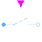
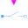

IdealClosingSwitchPolyphase ideal closer |

|
Diagram
{kind=link}
Information
This information is part of the Modelica Standard Library maintained by the Modelica Association.
Contains m ideal closing switches (Modelica.Electrical.QuasiStatic.SinglePhase.Ideal.IdealClosingSwitch).
Use with care: This switch is only intended to be used for structural changes, not fast switching sequences, due to the quasi-static formulation.
Parameters (6)
| m |
Value: 3 Type: Integer Description: Number of phases |
|---|---|
| mh |
Value: m Type: Integer Description: Number of heatPorts=number of phases |
| useHeatPort |
Value: false Type: Boolean Description: = true, if all heat ports are enabled |
| T |
Value: fill(293.15, m) Type: Temperature[mh] (K) Description: Fixed device temperatures if useHeatPort = false |
| Ron |
Value: Type: Resistance[m] (Ω) Description: Closed switch resistance |
| Goff |
Value: Type: Conductance[m] (S) Description: Opened switch conductance |
Connectors (4)
| plug_p |
Type: PositivePlug Description: Positive quasi-static polyphase plug |
|
|---|---|---|
| plug_n |
Type: NegativePlug Description: Negative quasi-static polyphase plug |
|
| heatPort |
Type: HeatPort_a[mh] Description: Conditional heat ports |
|
| control |
Type: BooleanInput[m] Description: true => p--n connected, false => switch open |
Components (5)
| plugToPins_p |
Type: PlugToPins_p |
|
|---|---|---|
| plugToPins_n |
Type: PlugToPins_n |
|
| v |
Type: ComplexVoltage[m] Description: Complex voltage |
|
| i |
Type: ComplexCurrent[m] Description: Complex current |
|
|  | idealClosingSwitch |
Type: IdealClosingSwitch[m] |
Used in Examples (4)
|
Modelica.Magnetic.QuasiStatic.FundamentalWave.Examples.BasicMachines.InductionMachines Induction machine with squirrel cage started directly on line (DOL) |
|
|
Modelica.Magnetic.QuasiStatic.FundamentalWave.Examples.BasicMachines.InductionMachines Induction machine with squirrel cage starting Y-D |
|
|
Modelica.Magnetic.QuasiStatic.FundamentalWave.Examples.BasicMachines.InductionMachines Induction machine with squirrel cage starting with transformer |
|
|
Modelica.Magnetic.QuasiStatic.FundamentalWave.Examples.BasicMachines.InductionMachines Starting of induction machine with slip rings |
Used in Components (1)
|
Modelica.Magnetic.QuasiStatic.FundamentalWave.Utilities Y-D-switch |